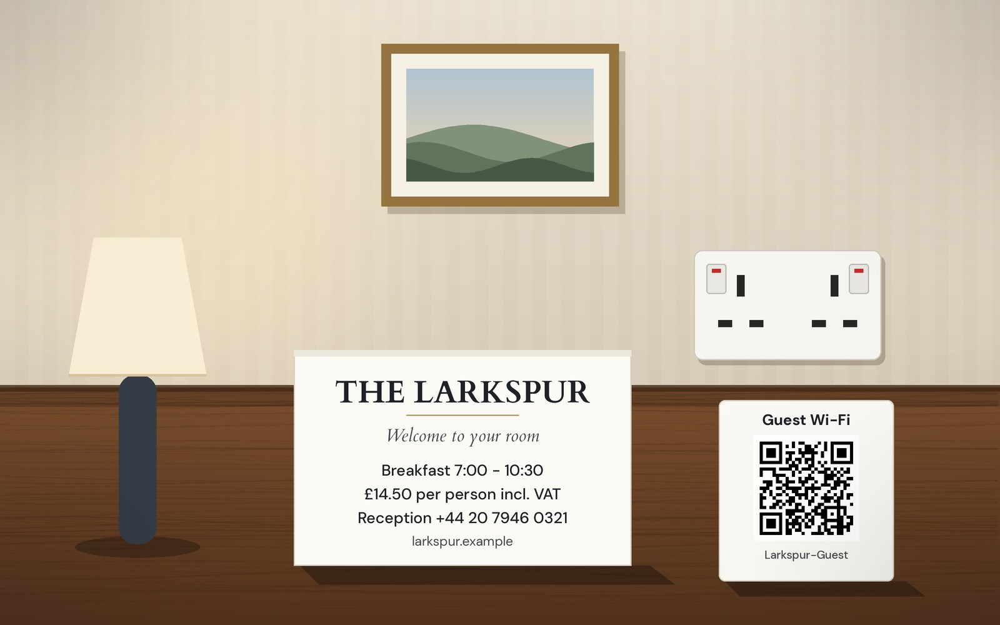
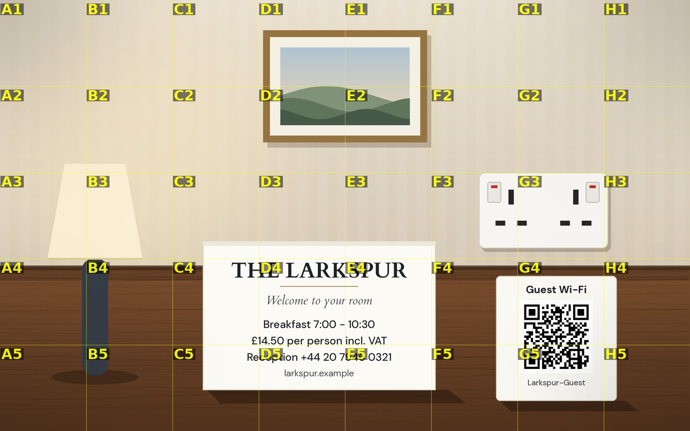
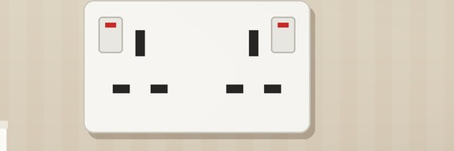
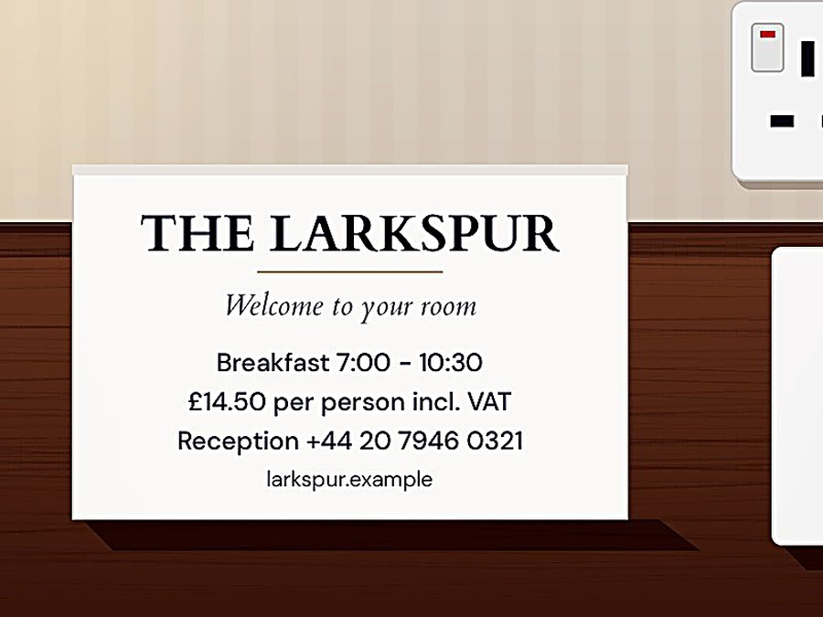

Where was this indoor photo taken?
One photo in. Venue, address and coordinates out, with a confidence the evidence actually supports and a tidy case folder that shows every step.

An answer you can check, and the folder that proves it
The chat answer names the place, the level it reached and why. The case folder keeps the ledger, the cited evidence and nothing else.
- Why
- “Reception +44 20 7946 0321” read on the tent card: libphonenumber places +44 20 in London (computed). A BS 1363 Type G socket (observed) and “£14.50 per person incl. VAT” (read) agree on the UK.
- Alternatives
- Guernsey, Jersey, Isle of Man, Gibraltar, the Falklands and St Helena share the socket and the £. The +44 20 number separates them (2.7 % share each).
- Not verified
- The venue is fictional, so no site candidate exists and the site level stays open (with a real venue, an unverified hotel would appear here as the best lead, never as the answer). There is no EXIF time, so no sun or time-zone check.
.work/. finalize deletes them, plus any evidence nothing cites.One photo, six steps, every one on the record
Real output from scripts/igl.py, excerpted, with the case path shortened. The complete case folder is published next to this page.
not_applicable.Intake: copy, read, grid
The photo is copied byte for byte into a new case folder, which never overwrites an older one. Every metadata channel is read, and a labelled grid makes any region citable as C3:E5.
Here the file has no EXIF, and its C2PA content credentials say an AI assistant provided it. The report later states that the sun and time-zone checks were impossible, rather than skipping them silently.
$ igl.py init larkspur-room.jpg
CASE …/larkspur-room-geolocation
IMAGE input/larkspur-room.jpg 1600x1000 JPEG
VIEW evidence/E01_overview-grid.jpg (grid 8 cols A.. x 5 rows 1..)
METADATA
- no EXIF - stripped (messaging/social upload, screenshot,
export) or synthetic; absence proves nothing
- C2PA content credentials present (issued by Anthropic; …)
- JPEG quality ~90
- 1600x1000 without EXIF fits social-media recompression
sizes (weak)
init.Hypotheses, before any tool output
The agent writes two to four ranked hypotheses first, and what would tell them apart. Every later finding has to confirm, refine or overturn them, and an overturn records what caused it. This is the anchor defence.
An inference carries the lowest grade (D) and can move the ranking by at most ×3.
$ igl.py note CASE "Hypotheses: scene=hotel room desk. 1) United Kingdom: switched three-pin socket and £ prices; 2) another British Isles or Commonwealth territory sharing the socket and the £ (Isle of Man, Channel Islands, Gibraltar); 3) a British-themed venue abroad (unlikely: fixed wall socket). Would discriminate: the phone prefix and area code on the card" --kind hypothesis --status inferred --source image N1 [inferred, grade D, LR cap 3] Hypotheses: scene=hotel room…
Machine perception: OCR, codes, signals
scan runs multi-pass OCR with script probing, decodes every QR code and barcode, and mines the text for phones, money, domains and tax words. Hover a line to see where it was read.
- Phone+44 20 7946 0321 → GB, London, Europe/London
- Money£14.50 → 10 territories with a £ currency
- QRWi-Fi “Larkspur-Guest”, password
<redacted> - Domainlarkspur.example → no country (reserved)
- TaxVAT → a VAT-using country
Hard facts, each with a grade and a file
Text verified on a zoomed crop is read (grade A). A deterministic lookup is computed (A). A shape you can point at is observed (B). The grade caps how far a clue can move the board.
| Clue | Observation | Grade |
|---|---|---|
| N2 | BS 1363 Type G double switched socket: vertical earth slot above two horizontal slots | Bobserved ≤6 |
| N3 | “£14.50 per person incl. VAT” | Aread ≤50 |
| N4 | “+44 20 7946 0321” → GB, London | Acomputed ≤50 |
| N5 | English on every item, no other script | Bobserved ≤6 |
| N6 | Venue “THE LARKSPUR”, SSID “Larkspur-Guest”: fictional, kept as context | Acomputed · context |


$ igl.py crop CASE --cell F3:H3 --label socket E05 evidence/E05_socket.jpg $ igl.py note CASE "'+44 20 7946 0321' read on the tent card; libphonenumber: GB, London (area code 20)" --kind text --status computed --source text --file E06 N4 [computed, grade A, LR cap 50] '+44 20 7946 0321' read…
Narrow the world, without silent exclusions
Fixed standards are intersected across 250 countries. The socket matches 55 of them, £ matches 10 and English 118, and the phone number links the UK and London directly.
Countries left off the board still compete as one block (C*), so a weak clue can never act as an exclusion. Category clues such as the socket compete with every alternative one by one. The phone number is different: it identifies, so the UK is weighed against the whole field at once. Below country the board stays open too: London's share is its share within the UK times the UK's share.
$ igl.py countries --plug G --case CASE --clue N2 linked N2 to 55 country candidates with LR 6 (55 added) $ igl.py countries --currency £ --case CASE --clue N3 --lr 20 linked N3 to 10 country candidates with LR 20 (3 added) $ igl.py link CASE N4 --for C52:30 --why "+44 20 is a UK (London) number" N4 -> C52 United Kingdom: LR 30
Country board after four clues
Share of the evidence at country level. Real output of igl.py rank.
The UK holds 0.82: a decisive clue (text) plus the socket (image) make it HIGH at country level.
Show as table
Decide, refuse to overclaim, audit, finalize
The answer is the finest level the evidence verifies, and its confidence is computed from the ledger. Asking for more than the evidence supports is refused, and so is a LOW site under a verified city: it would go in as --lead.
check then requires all 13 core methods to be resolved, and finalize writes the report and prunes everything uncited.
$ igl.py answer CASE C135 --confidence high error: confidence 'high' exceeds what the evidence supports (cap 'medium'): share 0.80 at city level (0.97 within United Kingdom) 1 decisive clue(s) from text 1 independent lineage(s) with LR>=2: text $ igl.py answer CASE C135 --radius 25000 --summary "…" ANSWER London 51.5072, -0.1276 ± 25000 m · level city · confidence medium (cap medium) $ igl.py check CASE PASS all checks passed core method coverage: 13/13 $ igl.py finalize CASE PASS all checks passed finalized CASE REPORT.md (9 KB) case.json (83 KB) … 6 evidence files, input/, result.json
Why MEDIUM and not HIGH
- Decisive clue: yes, the +44 20 phone number (computed).
- Independent lineages at city level: one (text). HIGH needs two.
- Country: HIGH. The UK holds 0.82 on two lineages, the text on the card and the socket on the wall.
- City share: 0.80, that is 0.97 within the UK times the UK's 0.82. A city is never more certain than its country.
- Site level: needs a decisive clue, and for HIGH a match against independent reference photos with a rival put through the same comparison. Impossible for a fictional venue, and the answer says so.
With a real venue, the skill goes on to reverse image search (Yandex, TinEye and Baidu headless, Google Lens and Bing by URL), picture search for every venue of the kind in the area with the results sorted by likeness to the photo (refs), web and social search, listings, maps and Wikidata, and then verifies the favourite and its closest rival against independent reference photos (compare).
From photo to verified place, recorded as it happens
SKILL.md gives the agent the workflow, the six ways indoor photos get located wrongly, and the evidence rules. A single CLI does the measurable parts and keeps the ledger; the agent's own web search, fetch and browser tools do the rest.
Intake
Byte-exact copy, every metadata channel, labelled grid view, and a check of which services the CLI can reach.
initHypotheses
Two to four ranked hypotheses written before any tool output, then confirmed, refined or overturned.
note --kind hypothesisRead the whole photo
Precision-filtered OCR, QR and barcodes, then every tile by eye: identity carriers, fixed standards, local references.
scancropSearch by the photo
Reverse image search on the frame, crops and a mirror. Every hit is compared with the photo: copy, same scene, partial or unconfirmed.
revsearchshareNames and region
Names, phones and codes searched exactly; plugs, currency, script and other standards intersected over 250 countries.
lookupcountriesSearch by pictures
Image searches for the kind of venue in the area, and for every venue enumerated there. Results come back sorted by likeness to the photo.
refsgeo poisocialVerify
Falsification test first; the candidate's own photos next to yours; three named fixed features; the closest rival through the same comparison.
refs --forcompareConsistency
Time zone, sun, weather, season and standards against the candidate. Argue for the runner-up, re-run the deciding step differently.
geo timezonesunDecide & finish
Answer at the finest verified level, the best lead and its pin apart, confidence capped by rules, audit, tidy finalize.
answer --leadcheckfinalize
Confidence is computed, not claimed
How a clue was obtained caps how much it can count. Agreement only counts across independent sources. The tier comes out of the ledger.
How much one clue can move the board
Maximum likelihood ratio per status, enforced by link.
Show as table
A decisive clue, two independent lineages, a share of at least 0.80 and no open contradiction on the chain. A venue needs a reference match whose rival went through the same comparison, or decisive clues from two lineages.
A decisive clue with a share of at least 0.50. Above venue level, two independent lineages also suffice. Resemblance and captions never make a venue MEDIUM.
Anything weaker: a lead to follow, not a finding.
Lineage, not count
Five décor clues are one source. Following an engine's guess into a database is circular.
Omission ≠ exclusion
Every level keeps an open block for what is not on the board, and a city is never more certain than its country.
Exclusion needs proof
Only read, computed or matched evidence with a file can rule a candidate out.
Verified answer, separate lead
A LOW site under a verified city is reported as the best lead, never as the answer.
Exhaust, never loop
13 core methods must each end as results, no_results or not_applicable. A blocked service is not an absence.
Identify, or merely fit
A name read in the photo identifies one place and is weighed against all alternatives together. A socket type fits fifty countries and competes with each.
A match names its features
Three specific fixed features and the comparison file, or it is not a match. A copy of the photo is provenance, never a confirmation.
The rival decides
If the rival's photos match as well, the features are a shared design. The match then belongs to the area, and the venues stay leads.
Every channel a photo can leak
Fixed fittings outrank movable décor, and text outranks taste. Each channel has a written playbook in references/.
Metadata
EXIF, GPS, XMP and IPTC, the embedded thumbnail, UTC offset to time zones, AI markers and C2PA credentials.
Text
Multi-pass OCR with script probes, filtered so that texture is not reported as text, and a prompt to re-read in the local language.
Codes
QR and barcodes: EMV merchant name and city, Swiss QR-bill, SEPA, UPI, Wi-Fi, vCard, GS1.
Phones & money
Phone numbers to city level, currencies including former ones, number formats, tax words.
Fixed standards
Sockets, switches, plumbing, heating, windows, safety signs, lift certificates, floor numbering.
Products & payments
Retail chains, payment schemes, regulatory marks, ISP routers, keyboard layouts.
Style & customs
Décor, patterns, religious and seasonal items. Always weighted as weak evidence.
Personal items
Uniforms, tickets, receipts and badges, read for what they say about the place, never about the person.
Window & light
Floor estimate, sun azimuth and elevation, bearings to landmarks, qibla, historical weather.
Image search
Reverse search on Yandex, TinEye and Baidu, Google Lens and Bing by URL in a browser, and picture search by text for every venue of a kind in an area. Each picture is compared with the photo and sorted by likeness.
Social media
Bluesky, Flickr, Openverse, Mastodon and Lemmy through open APIs, plus ready-made searches for 18 platforms. Places only.
Maps & open data
OSM co-location queries, Wikidata SPARQL, Commons, and listing platforms in about 50 countries.
Careful with people, strict with itself
Privacy by design
- No face recognition and no identification of individuals. Social media is searched for places, never for people.
- Private homes: the skill asks once what the result is for. Without a legitimate purpose it stops at city or neighbourhood level.
- Secrets redacted: Wi-Fi passwords, IBANs and contact-card names, when decoded and when an engine or a page echoes them back. The demo's QR shows
P:<redacted>. - Disclosed uploads: the report lists which engines received the photo and every temporary copy (metadata stripped, deleted after hours). Picture search sends only text, and the similarity model runs locally. No logins on anyone's behalf, no CAPTCHA solving.
Verified, not assumed
- 126 offline tests cover ledger rules, caps, coherent shares, answer gating, image matching and ranking, parsers, redaction and geometry.
- Sun position within 0.05° of NREL's SPA at 8 locations worldwide. Bearings within 0.13° of WGS84 geodesics.
- Every command and option in the docs and on this page is checked against the CLI by the test suite, this page against the demo case and the rules in the code, and the zip against the skill folder. The offline tables are rebuilt from Unicode CLDR and Wikipedia by one script.
Two minutes to your first case
Python 3.9+ and Pillow, plus tzdata on Windows. Everything else (tesseract, OpenCV, Playwright, onnxruntime, phonenumbers) is optional and only switches on its method.
- Download
indoor-geolocator.zipfrom the latest release. - Turn on code execution: Settings → Capabilities.
- Open Customize → Skills, click +, then Create skill → Upload a skill, and choose the zip.
- Attach an indoor photo and ask “where was this taken?”, or attach it with no text at all.
indoor-geolocator/ folder at its top level, as the upload requires.- Clone the repository and copy the skill folder into your personal skills.
- Install the requirements, and optionally the extras.
- Run
doctoronce to see what works on your machine. - Share an interior photo with Claude, or type
/indoor-geolocator.
$ git clone https://github.com/Ezharjan/indoor-geolocator $ cp -r indoor-geolocator/indoor-geolocator ~/.claude/skills/ $ pip install -r ~/.claude/skills/indoor-geolocator/requirements.txt $ python3 ~/.claude/skills/indoor-geolocator/scripts/igl.py doctor
- Point your agent (Codex, Gemini CLI, Cursor…) at
indoor-geolocator/SKILL.md. - The toolbox is a plain Python CLI. Every command documents itself with
-h. - Cases are written to the current folder, or wherever
--outpoints.
$ python3 indoor-geolocator/scripts/igl.py -h $ python3 indoor-geolocator/scripts/igl.py init photo.jpg $ python3 indoor-geolocator/scripts/igl.py scan photo-geolocation